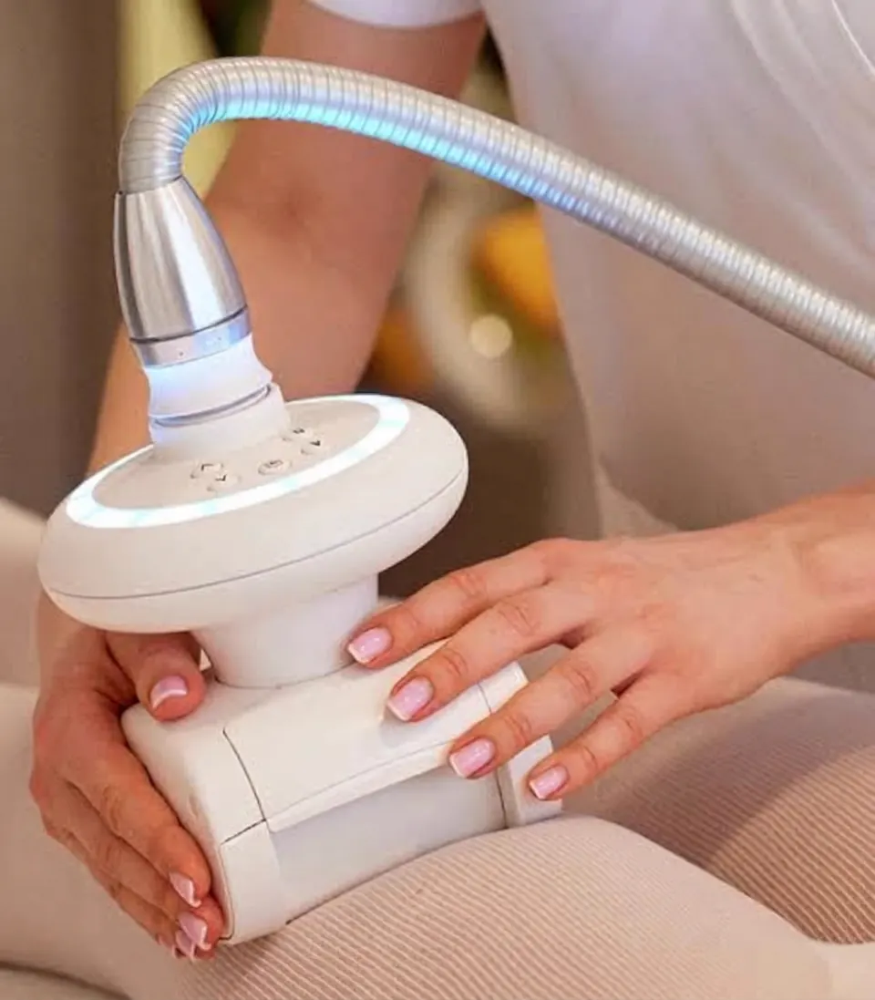
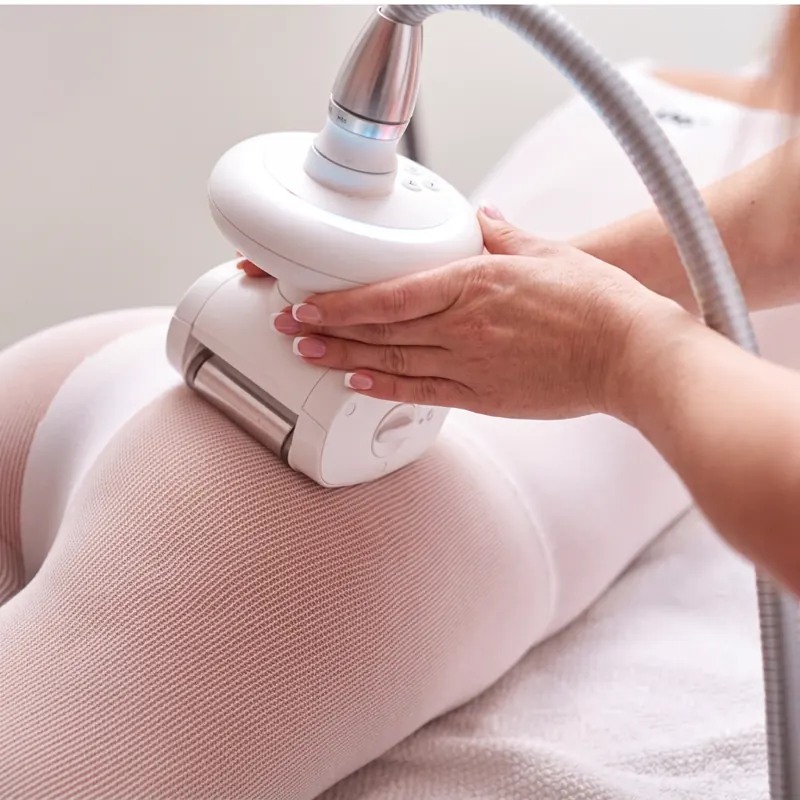

Body treatments · Jeżyce, Poznań
Mechanical suction massage, known as LPG massage. A handpiece with rollers lifts and rolls a fold of skin, working on cellulite, circulation and skin tone. Thirty or sixty minutes, ideally as a series. At our studio in Jeżyce, ul. Zeylanda 3/1. We speak English.

How it works
Endermologie is a massage done with a handpiece that has moving rollers and suction. The handpiece draws in a fold of skin and the tissue under it, and the rollers move and roll it. It feels like an intense hand massage, but with even, consistent pressure over the whole area.
This stimulates blood and lymph circulation and the skin itself, which is why endermologie is chosen for cellulite, heavy legs and loss of firmness. The treatment is usually done in a thin, stretchy body suit that the handpiece glides over smoothly. As with other machine-based treatments, the effect builds over a series.

Benefits
Rolling and suction work on the look of the skin where it is uneven.
The massage stimulates blood and lymph circulation, so it works well when your legs feel heavy.
Regular stimulation of the skin supports its tone, for example after weight loss.
For most people it is simply a strong, rhythmic massage - no needles and no recovery time.
Step by step
We ask about pregnancy, varicose veins and thrombosis, blood thinners, chronic conditions and cancer treatment.
We agree what we work on - thighs, buttocks, stomach or the whole body - and whether 30 minutes is enough or 60 is better.
The handpiece moves over the body, lifting and rolling the skin. We match the suction to you and to the area.
It is worth drinking water. If you are planning a series, we agree the rhythm of visits straight away - at the start, treatments are usually more frequent.
Times & prices
Thirty minutes is enough for one or two areas, sixty for working on a larger part of the body. We decide the number of treatments in the series after the first visit.
Contraindications
With heart or circulation conditions, hernias, fresh scars, or during medical treatment, we decide after talking to you, and if in doubt we ask you to check with your doctor. We go through the full list of contraindications before the first visit.
FAQ
A mechanical suction massage, known as LPG massage. A handpiece with rollers draws in and rolls a fold of skin, stimulating blood and lymph circulation and the skin itself.
Endermologie is chosen precisely for cellulite, because it works on circulation and the look of the skin. The effect builds over a series and is worth maintaining.
With endermologie the series is what counts, and at the start treatments are usually more frequent. We decide the number and rhythm of visits after the first treatment.
Usually not. It feels like a strong, rhythmic massage. We adjust the suction as we go.
No. It is a treatment for the skin and circulation, not a weight-loss method. It works best alongside exercise and healthy habits.
First effects after the 1st session - the skin is smoother with better blood flow, and the legs feel lighter. A clearer change in how cellulite looks builds over a series, so we decide the number of visits after the first one.
Ideally in winter or early spring, in January or February. A series with more frequent treatments at the start and longer gaps later needs several weeks, so starting in January gives you a comfortable margin until May.
Book online · We speak English
Most foreign guests message us on WhatsApp - write in English and we will reply in English.
Contact · Booking · We speak English
We use necessary cookies to make the site work. With your consent we would also like to use Google Analytics to see which pages are useful. You can change your choice at any time. Details in our privacy policy (in Polish).
Needed for the site to work and to remember your choice. They cannot be switched off.
Google Analytics - aggregated visit statistics. Off by default.